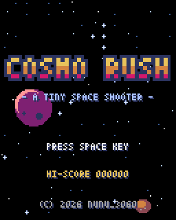
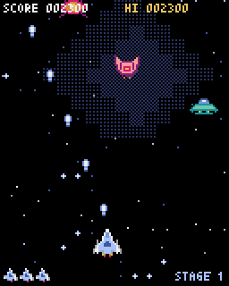
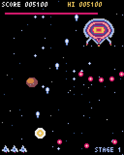

Pyxel によるレトロゲーム作成入門
はじめに
本書は、Python のレトロゲームエンジン Pyxel を使い、小さなゲームを 1 本、企画から公開まで自分だけで作り上げるための入門書である。プログラムを書くことはできるが、ゲームを作ったことも、ドット絵を描いたことも、曲を作ったこともないエンジニアを読者として想定している。
ゲーム制作には、プログラミング以外にも企画、グラフィックス、サウンド、調整、公開といった多くの作業がある。本書ではそれぞれを 1 章ずつ取り上げ、題材のゲームを少しずつ完成に近づけながら説明する。
本書で作るゲーム
題材は縦スクロールのシューティングゲーム「COSMO RUSH」である。自機を操作して弾を撃ち、次々に現れる敵を倒してスコアを稼ぐ。ステージの最後にはボスが現れ、倒すと難易度が上がって次のステージが始まる。
 |
 |
 |
タイトル画面 |
プレイ画面 |
ボス戦 |
完成版はブラウザで遊べる。COSMO RUSH を遊ぶ（矢印キーで移動、Z キーまたはスペースキーでショット）。
対象読者と前提知識
本書は次の読者を想定している。
Python の文法、クラス、型ヒントを理解している。
コマンドラインで
pipや仮想環境（venv）を使える。ゲーム制作、ドット絵、作曲の経験はない。
Python 自体の説明は行わない。一方で、ゲーム制作に固有の考え方（ゲームループ、座標、当たり判定、スプライト、効果音の作り方など）は最初から説明する。
本書の構成
章 |
内容 |
|---|---|
Pyxel の特徴を知り、開発環境を整える。 |
|
作るゲームを決め、画面遷移と必要な素材を洗い出す。 |
|
ゲームループ、描画、入力、動き、当たり判定などの基礎を学ぶ。 |
|
Pyxel Editor でドット絵とタイルマップを作る。 |
|
Pyxel Editor で効果音と BGM を作る。 |
|
図形だけを使って、遊べる最小限のゲームを作る。 |
|
シーン、素材、背景、音、演出、敵の種類、ボスを加えて完成させる。 |
|
テストプレイと単体テストで品質を上げる。 |
|
ゲームをパッケージにまとめ、Web で公開する。 |
|
次に挑戦するとよいことを紹介する。 |
第 1 章から順に読むことを想定している。ゲームプログラミングの経験がある読者は、第 3 章を飛ばしてもよい。
動作確認環境
本書の内容は次の環境で確認した。
ソフトウェア |
バージョン |
|---|---|
OS |
Windows 11 |
Python |
3.14.6 |
Pyxel |
2.9.9 |
flake8 |
7.4.1 |
mypy |
2.4.0 |
pytest |
9.1.1 |
Pyxel は更新が活発で、バージョンによって API や Pyxel Editor の画面が変わることがある。本書と異なる動きをする場合は、バージョンを 2.9.9 にそろえて試すとよい（開発環境を整えるを参照）。
サンプルコード
本書のサンプルコードと素材は、次のリンクから zip ファイルでまとめてダウンロードできる。各章の本文からも、個別のファイルをダウンロードできる。
zip ファイルを展開すると、次の構成の examples ディレクトリができる。
1examples/
2├── setup.cfg flake8・mypy・pytest の設定
3├── assets/ 素材（リソースファイルと、それを生成するスクリプト）
4├── ch01_hello/ 第 1 章のサンプルコード
5├── ch03_basics/ 第 3 章のサンプルコード
6├── ch06_step1/ ～ ch06_step4/ 第 6 章のサンプルコード（ステップごと）
7├── ch07_step5/ ～ ch07_step9/ 第 7 章のサンプルコード（ステップごと）
8├── cosmo_rush/ 完成版のゲーム
9└── tests/ 第 8 章の単体テスト
サンプルコードはすべて examples ディレクトリで次のように実行する。
1> cd examples
2> pyxel run ch06_step1/main.py
本書の表記
コード例の左端の数字は行番号である。ファイルの一部を抜き出したコード例では、ファイル内の行番号をそのまま示す。
コマンドの例では、先頭の
>がプロンプトを表す。>は入力しない。pyxel.btn()のように書いた場合、Pyxel のモジュールpyxelにある関数を表す。「Pyxel」は製品名、
pyxelはコマンド名とパッケージ名を表す。